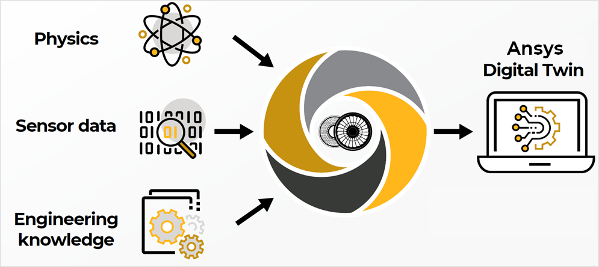

PyTwin documentation 0.6.0#
Introduction#
An analytics-driven, simulation-based digital twin is a connected, virtual replica of an in-service physical asset in the form of an integrated multi-domain system simulation that mirrors the life and experience of the asset. Ansys Digital Twins enable system design and optimization as well as predictive maintenance, to optimize industrial asset management. By implementing Ansys Digital Twins, you can improve top-line revenue, manage bottom-line costs, and both gain and retain competitive advantages.
{kind=link}
Ansys Twin Builder and Ansys Twin Deployer are open solutions that allow engineers to create digital twins and export them in the form of deployable twin runtimes.
What is PyTwin?#
PyTwin is part of the PyAnsys ecosystem that lets you deploy twin runtimes within a Python environment of your choice in conjunction with other PyAnsys libraries and external Python libraries.
PyTwin implements different modules to facilitate the consumption of twin runtimes. It gives access to core runtime functionalities as well as a higher-level abstraction class offering Python interfaces that can be used in any client code for workflow development and twin runtime integrations. Using PyTwin, you can programmatically interact with and control the execution of twin runtimes.
Features#
Some of the many features in the PyTwin package, pytwin, allow you to:
Use twin runtime functionalities to build your own consumption workflows based on atomic API calls. For more information, see Twin runtimes.
Access and use the higher-level abstraction implementation of consumption workflows to directly use and integrate twin runtimes. For more information, see Evaluate.
Become familiar with PyTwin functionalities by exploring the multiple examples that are available. For more information, see Examples.
Documentation and issues#
In addition to Getting started and User guide sections, the PyTwin documentation provides API reference, Examples, and Contribute sections.
On the PyTwin Issues page, you can create issues to submit questions, report bugs, and request new features. To reach the PyAnsys support team, email pyansys.support@ansys.com.
License#
PyTwin is licensed under the MIT license.
PyTwin makes no commercial claim over Ansys whatsoever. This library extends the functionality of Ansys Twin Builder and Twin Deployer by adding a Pythonic interface to twin runtimes without changing the core behavior or license of the original software. The interactive control of twin runtimes through PyTwin may require a license of Twin Deployer depending on the case, see Getting started section for more information.
For more information on both Ansys Twin Builder and Twin Deployer, see Ansys Twin Builder on the Ansys website.